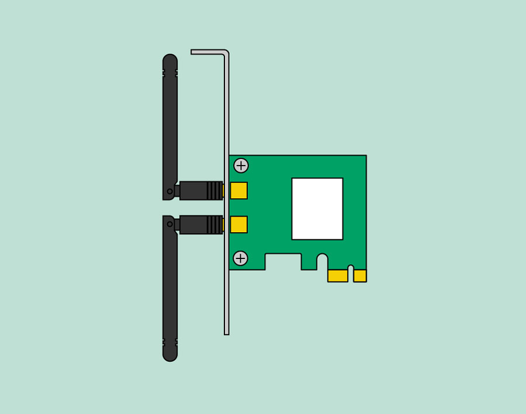

Computer Basics: Inside a Computer
Inside a computer
Have you ever looked inside a computer case, or seen pictures of the inside of one? The small parts may look complicated, but the inside of a computer case isn't really all that mysterious. This lesson will help you master some of the basic terminology and understand a bit more about what goes on inside a computer.
Motherboard

The motherboard is the computer's main circuit board. It's a thin plate that holds the CPU, memory, connectors for the hard drive and optical drives, expansion cards to control the video and audio, and connections to your computer's ports (such as USB ports). The motherboard connects directly or indirectly to every part of the computer.
CPU/processor

The central processing unit (CPU), also called a processor, is located inside the computer case on the motherboard. It is sometimes called the brain of the computer, and its job is to carry out commands. Whenever you press a key, click the mouse, or start an application, you're sending instructions to the CPU.
The CPU is usually a two-inch ceramic square with a silicon chip located inside. The chip is usually about the size of a thumbnail. The CPU fits into the motherboard's CPU socket, which is covered by the heat sink, an object that absorbs heat from the CPU.
A processor's speed is measured in megahertz (MHz), or millions of instructions per second; and gigahertz (GHz), or billions of instructions per second. A faster processor can execute instructions more quickly. However, the actual speed of the computer depends on the speed of many different components—not just the processor.
RAM (random access memory)

RAM is your system's short-term memory. Whenever your computer performs calculations, it temporarily stores the data in the RAM until it is needed.
This short-term memory disappears when the computer is turned off. If you're working on a document, spreadsheet, or other type of file, you'll need to save it to avoid losing it. When you save a file, the data is written to the hard drive, which acts as long-term storage.
RAM is measured in megabytes (MB) or gigabytes (GB). The more RAM you have, the more things your computer can do at the same time. If you don't have enough RAM, you may notice that your computer is sluggish when you have several programs open. Because of this, many people add extra RAM to their computers to improve performance.
Hard drive

The hard drive is where your software, documents, and other files are stored. The hard drive is long-term storage, which means the data is still saved even if you turn the computer off or unplug it.
When you run a program or open a file, the computer copies some of the data from the hard drive onto the RAM. When you save a file, the data is copied back to the hard drive. The faster the hard drive, the faster your computer can start up and load programs.
Power supply unit

The power supply unit in a computer converts the power from the wall outlet to the type of power needed by the computer. It sends power through cables to the motherboard and other components.
If you decide to open the computer case and take a look, make sure to unplug the computer first. Before touching the inside of the computer, you should touch a grounded metal object—or a metal part of the computer casing—to discharge any static buildup. Static electricity can be transmitted through the computer circuits, which can seriously damage your machine.
Expansion cards
Most computers have expansion slots on the motherboard that allow you to add various types of expansion cards. These are sometimes called PCI (peripheral component interconnect) cards. You may never need to add any PCI cards because most motherboards have built-in video, sound, network, and other capabilities.
However, if you want to boost the performance of your computer or update the capabilities of an older computer, you can always add one or more cards. Below are some of the most common types of expansion cards.
Video card
The video card is responsible for what you see on the monitor. Most computers have a GPU (graphics processing unit) built into the motherboard instead of having a separate video card. If you like playing graphics-intensive games, you can add a faster video card to one of the expansion slots to get better performance.
Network card

The network card allows your computer to communicate over a network and access the Internet. It can either connect with an Ethernet cable or through a wireless connection (often called Wi-Fi ). Many motherboards have built-in network connections, and a network card can also be added to an expansion slot.
Bluetooth card (or adapter)
Bluetooth is a technology for wireless communication over short distances. It's often used in computers to communicate with wireless keyboards, mice, and printers. It's commonly built into the motherboard or included in a wireless network card. For computers that don't have Bluetooth, you can purchase a USB adapter, often called a dongle.